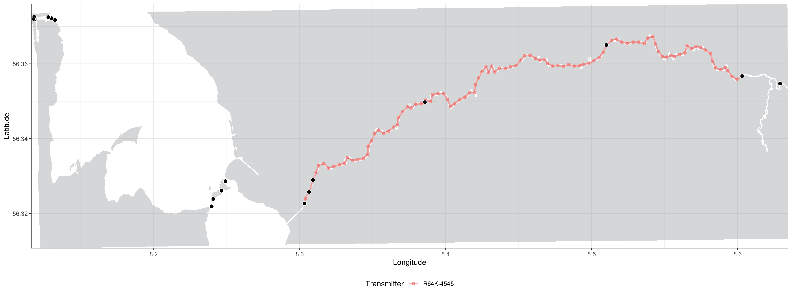

2. Refining the Shortest Paths in-water
Refining the Shortest Paths (RSP) of animals tracked with acoustic transmitters in estuarine regions
Yuri Niella & Hugo Flávio
2023-12-07
Source:vignettes/a-2_Refining_Shortest_paths.Rmd
a-2_Refining_Shortest_paths.RmdIndex
- Preparing the data
- Refining the Shortest Paths in-water
- Calculating utilization distribution
- Calculating overlaps
- Calculating areas in steps
The runRSP() function is used to recreate the shortest
paths between pairs of acoustic detections. By default, the analysis
will run for all transmitters detected, but you can determine also which
transmitters you would like to include using tags. The
detection data, station coordinates and the group of each tracked animal
is passed on to RSP automatically by actel through the argument
input. You must also include the name of the transition
layer you created using the argument t.layer, e.g.:
library(actel)
library(RSP)
filtered_data <- explore(tz = "Europe/Copenhagen")
water.shape <- loadShape(shape = "my_study_area.shp", size = 0.0001)
water.transition <- transitionLayer(water.shape, directions = 16)
rsp.results <- runRSP(input = filtered_data, t.layer = water.transition, coord.x = "Longitude", coord.y = "Latitude")- Note:
-
coord.xandcoord.ymust be the column names containing the coordinates in the spatial data frame.
The detection ranges of each listening station are
also taken into account in the runRSP(). These will be used
as the location errors for the dBBMM when calculating UD areas. A
Range column can be included in the spatial.csv
file for specifying the detection ranges (in metres) for each
acoustic station if these are known. If the ‘Range’ column is not found,
a default detection range of 500 m is automatically considered for each
receiver with the warning:
Warning: Could not find a 'Range' column in the spatial data; assuming a range of 500 metres for each receiver.- Note:
-
The ‘Range’ column must already be present in the spatial.csv file when
you run the
explore()function for it to be incorporated in the analysis.
There is some uncertainty regarding the trajectory taken while
animals move between a pair of consecutive acoustic detections. This
uncertainty increases proportionally to the time taken to go from one
place to another. By default, consecutive detections separated by more
than 24 hours will be broken by the
runRSP() into separate ‘tracks’ (defined by the
max.time = 24 argument, in hours). This avoids the
estimation of unrealistic behaviour when the animals do not get detected
in any array for exceedingly long periods of time. Detections that occur
isolated (e.g. more than 24-h before or after any other detection) are
automatically excluded from analysis. The runRSP() will
return the percentage of raw detections that can be used for refining
the shortest paths when the analysis is finished:
M: Percentage of detections valid for RSP: 99.8%Pairs of detections can occur either at the same
station or at different stations. For
consecutive detections on different stations, estimated positions are
added at intervals of approximately a given distance
argument in metres (250 m by default). Note that the added positions
will be centered relative to the total distance, e.g., if the distance
between two stations is 600 m, then two RSP positions will be added; one
at 200 m and one at 400 m. On the other hand, if an animal is detected
consecutively at the same station (with a time interval greater than the
stipulated at the time.step argument), then estimated
positions are added at that station location, over intervals of
approximately time.step minutes. E.g. if a fish is detected
at a station twice with a 22 minute interval, and time.step
is set to 10, two estimated positions will be included.
While moving away from the first detection, the position
errors gradually increase for each estimated position. This
increase defaults to a 5% rate of the distance argument,
but it can be specified in metres using er.ad. When the
animal reaches half of the elapsed time/distance between the first and
the second detection, the errors of estimated positions now gradually
decrease as it approaches the second station where it got detected. This
principle is used for both pairs of detections on different stations,
and for consecutive detections at the same station:
A: consecutive detections on the same station; B: consecutive detections on different stations.
Note how the distances between consecutive RSP
positions (points) vary around the distance
argument (250 m by default) as they depend on the estuary shape and the
shortest distances between stations. It is also possible to observe how
the errors of the estimated positions (lines) gradually
increase/decrease as the animals move between stations.
The dynamic Brownian Bridge Movement Model accounts
for the speed at which animals move between consecutive
detections to expand/contract the UD areas.
Consequently, depending on your array configuration, estuary shape and
species being tracked, you may find useful to adjust the
distance and time.lapse arguments for
recreating the most plausible movement patterns of the monitored
animals.
Note: If your tracked animals were recaptured during
the monitoring period you may want to provide these aditional locations
to runRSP(). To do so, please provide the following dataset
named recaptures.csv:
| Recapture.date | Signal | Length_mm | Weight_kg | Latitude | Longitude | Returned |
|---|---|---|---|---|---|---|
| 2014-10-17 17:10:34 | 485 | 481 | 2.1 | -33.13151 | 151.5974 | TRUE |
| 2014-10-31 18:02:39 | 485 | 481 | 2.1 | -33.08676 | 151.6002 | TRUE |
Please make sure you provide the Recapture.date
timezone at local time. To include the respective recapture locations in
the estimations of refined shortest paths, make sure to set
recaptures = TRUE in runRSP(). The recapture
locations will be used to start a new RSP track
begining at the recapture location:
| Timestamp | Receiver | Transmitter | Longitude | Latitude | Position | Track |
|---|---|---|---|---|---|---|
| 2014-10-10 10:23:24 | 115409 | A69-9004-485 | 151.6093 | -33.09295 | Receiver | Track_01 |
| 2014-10-10 10:38:15 | 115409 | A69-9004-485 | 151.6093 | -33.09295 | Receiver | Track_01 |
| 2014-10-17 17:10:34 | NA | A69-9004-485 | 151.5974 | -33.13151 | Recapture | Track_02 |
| 2014-10-17 18:00:22 | NA | A69-9004-485 | 151.5992 | -33.12971 | RSP | Track_02 |
| 2014-10-17 18:50:11 | NA | A69-9004-485 | 151.6008 | -33.12811 | RSP | Track_02 |
2.1. Exploring the runRSP results
Here are some examples of the runRSP() output:
- In the
$tracksobject you can find metadata, stored individually for each tracked transmitter, on the identified tracks (Track) and their corresponding number of total acoustic detections (original.n), duration in hours (Timespan), and their corresponding validity (Valid):
| Track | original.n | First.time | Last.time | Timespan | Valid |
|---|---|---|---|---|---|
| Track_01 | 3 | 2018-02-11 20:27:37 | 2018-02-11 20:29:35 | 0.03 hours | TRUE |
| Track_02 | 2 | 2018-02-20 10:54:54 | 2018-02-20 10:56:07 | 0.02 hours | TRUE |
| Track_03 | 103 | 2018-03-07 00:41:10 | 2018-03-07 08:20:02 | 7.64 hours | TRUE |
| Track_04 | 22 | 2018-03-17 13:07:43 | 2018-03-17 13:36:42 | 0.48 hours | TRUE |
| Track_05 | 1 | 2018-04-04 12:47:05 | 2018-04-04 12:47:05 | 0.00 hours | FALSE |
| Track_06 | 2 | 2018-04-18 08:41:11 | 2018-04-18 08:48:47 | 0.12 hours | TRUE |
| Track_07 | 3 | 2018-04-20 09:30:02 | 2018-04-20 09:33:55 | 0.06 hours | TRUE |
| Track_08 | 7 | 2018-04-23 05:10:47 | 2018-04-23 08:43:45 | 3.54 hours | TRUE |
| Track_09 | 22 | 2018-04-24 11:40:56 | 2018-04-26 01:00:13 | 37.32 hours | TRUE |
| Track_10 | 5 | 2018-08-20 11:56:47 | 2018-08-20 12:06:51 | 0.16 hours | TRUE |
| Track_11 | 2 | 2018-08-21 14:33:30 | 2018-08-21 14:42:52 | 0.156 hours | TRUE |
| Track_12 | 2 | 2018-08-22 16:04:24 | 2018-08-22 16:05:44 | 0.02 hours | TRUE |
| Track_13 | 1 | 2018-08-23 19:21:20 | 2018-08-23 19:21:20 | 0.00 hours | FALSE |
Only the valid tracks are used by
RSP to recreate the shortest in-water paths of tracked
animals. The tracking data can be retrieved from the list
$detections in which data is saved individually for each
transmitter.
The RSP data can be found in the $detections object,
stored individually for each tracked animal. There are two main
types of RSP interpolation:
- For consecutive detections on the same station:
| Timestamp | Receiver | Standard.name | Transmitter | Error | Longitude | Latitude | Position | Track |
|---|---|---|---|---|---|---|---|---|
| 2018-03-07 00:43:49 | 125449 | St.1 | R64K-4075 | 500 | 9.380188 | 56.5716 | Receiver | Track_3 |
| 2018-03-07 00:53:07 | NA | NA | R64K-4075 | 512.5 | 9.380188 | 56.5716 | RSP | Track_3 |
| 2018-03-07 01:02:26 | NA | NA | R64K-4075 | 512.5 | 9.380188 | 56.5716 | RSP | Track_3 |
| 2018-03-07 01:11:45 | 125449 | St.1 | R64K-4075 | 500 | 9.380188 | 56.5716 | Receiver | Track_3 |
- Note:
- Various columns were omitted in this display for simplicity.
The Position column in this dataset identifies the
two consecutive acoustic detections (Receiver) from this
animal. We can notice that they occurred on the same
Station (Standard.name column); the first on
2018-03-07 00:43:49 and the second on
2018-03-07 01:11:45 (slightly less than 30 minutes from
each other). Because this time difference is longer than the default
time.lapse (10 minutes), the runRSP()
estimated the intermediate positions (RSP) by repeating the station’s
Longitude and Latitude and changing
the Error parameter at a rate of 5% from the default
distance argument (250 metres = 12.5 metres). Notice how
the elapsed time was distributed evenly between the position
intervals.
- For consecutive detections on different stations:
| Timestamp | Receiver | Standard.name | Transmitter | Error | Longitude | Latitude | Position | Track |
|---|---|---|---|---|---|---|---|---|
| 2018-04-27 05:27:10 | 100474 | St.1 | R64K-4125 | 500 | 9.921725 | 57.05595 | Receiver | Track_5 |
| 2018-04-27 05:35:17 | NA | NA | R64K-4125 | 512.5 | 9.928500 | 57.05450 | RSP | Track_5 |
| 2018-04-27 05:43:24 | NA | NA | R64K-4125 | 525 | 9.935500 | 57.05350 | RSP | Track_5 |
| 2018-04-27 05:51:32 | NA | NA | R64K-4125 | 537.5 | 9.943500 | 57.05450 | RSP | Track_5 |
| 2018-04-27 05:59:39 | NA | NA | R64K-4125 | 550 | 9.949500 | 57.05650 | RSP | Track_5 |
| 2018-04-27 06:07:47 | NA | NA | R64K-4125 | 562.5 | 9.955500 | 57.05850 | RSP | Track_5 |
| 2018-04-27 06:15:54 | NA | NA | R64K-4125 | 575 | 9.960500 | 57.06150 | RSP | Track_5 |
| 2018-04-27 06:24:01 | NA | NA | R64K-4125 | 562.5 | 9.964500 | 57.06550 | RSP | Track_5 |
| 2018-04-27 06:32:09 | NA | NA | R64K-4125 | 550 | 9.968500 | 57.06850 | RSP | Track_5 |
| 2018-04-27 06:40:16 | NA | NA | R64K-4125 | 537.5 | 9.975500 | 57.07050 | RSP | Track_5 |
| 2018-04-27 06:48:24 | NA | NA | R64K-4125 | 525 | 9.981500 | 57.07250 | RSP | Track_5 |
| 2018-04-27 06:56:31 | NA | NA | R64K-4125 | 512.5 | 9.986500 | 57.07450 | RSP | Track_5 |
| 2018-04-27 07:04:39 | 107527 | St.2 | R64K-4125 | 500 | 9.992500 | 57.07650 | Receiver | Track_5 |
- Note:
- Various columns were omitted in this display for simplicity.
Here the animal was detected first at the station
St.1 on 2018-04-27 05:27:10, and then at the
station St.2 on
2018-04-27 07:04:39. The runRSP() now
calculated the shortest in-water path between stations, and we can see
how the Error of added locations increased up to
half-way, (575 metres on 2018-04-27 06:15:54), and then
decreased back to 500 as the track approached the second station.
RSP also has a plotDensities() function, which allows
you to investigate the distribution of elapsed time between consecutive
acoustic detections:
You can set a group argument to generate a density plot for a particular group of interest. By default all monitored groups are used.
2.2. Visualizing the runRSP outputs
We can use plotTracks() to plot any of the tracks from
the runRSP() output:
plotTracks(rsp.data1, base.raster = water.shape1, type = "both", tag = "R64K-4125", track = "Track_3")
plotTracks(rsp.data1, base.raster = water.shape1, type = "both", tag = "R64K-4125", track = "Track_3", land.col = "darkgreen")
plotTracks(rsp.data2, base.raster = water.shape2, type = "both", tag = "R64K-4545", track = "Track_9")
You can use the function suggestSize() in your base
raster (shapefile) file to get suggested dimensions for a projected
plot, and easily change the colour of the land mass using
land.col. The function addStations() can be
used to add the station locations to your plot.:
You can easily change the colour of the land mass
using land.col.

If the animal you want to plot was recaptured and you want to include
the recapture locations, you can use addRecaptures():
plotTracks(input = rsp.data, base.raster = water, tag = "A69-9004-485", track = 3) +
addStations(rsp.data) + addRecaptures(Signal = "485")2.3. Distances travelled exclusively in-water
The getDistances() function can be used to obtain the
distances travelled (in metres) during each RSP track. The column
Loc.type shows you whether the distances were calculated
only using the station locations or if they were calculated also
accounting for the interpolated positions (added by RSP).
dist.table <- getDistances(rsp.results)
dist.table| Animal.tracked | Track | Day.n | Loc.type | Dist.travel | Group |
|---|---|---|---|---|---|
| R64K-4075 | Track_09 | 3 | Receiver | 66876.7892 | R64K-4075 |
| R64K-4075 | Track_09 | 3 | RSP | 72662.5359 | R64K-4075 |
| R64K-4125 | Track_02 | 3 | Receiver | 13680.7627 | R64K-4125 |
| R64K-4125 | Track_02 | 3 | RSP | 16797.9609 | R64K-4125 |
| R64K-4125 | Track_03 | 4 | Receiver | 182882.4870 | R64K-4125 |
| R64K-4125 | Track_03 | 4 | RSP | 206155.7192 | R64K-4125 |
| R64K-4125 | Track_04 | 2 | Receiver | 25470.6122 | R64K-4125 |
| R64K-4125 | Track_04 | 2 | RSP | 30076.9265 | R64K-4125 |
| R64K-4125 | Track_06 | 1 | Receiver | 2921.3768 | R64K-4125 |
| R64K-4125 | Track_06 | 1 | RSP | 2940.6700 | R64K-4125 |
| R64K-4128 | Track_06 | 2 | Receiver | 29871.3633 | R64K-4128 |
| R64K-4128 | Track_06 | 2 | RSP | 33987.0067 | R64K-4128 |
| R64K-4128 | Track_07 | 2 | Receiver | 31824.9768 | R64K-4128 |
| R64K-4128 | Track_07 | 2 | RSP | 33987.0067 | R64K-4128 |
| R64K-4128 | Track_09 | 1 | Receiver | 32108.2706 | R64K-4128 |
| R64K-4128 | Track_09 | 1 | RSP | 37689.2695 | R64K-4128 |
We can use plotDistances() to compare the total
distances travelled by each animal calculated using only the station
locations and also including the RSP estimations:
plotDistances(dist.table)- Note:
-
You can view the data for a single group by using the argument
group.
plotDistances(dist.table, compare = FALSE)- Note:
-
If you set
compare = FALSE, only the RSP total distances travelled will be returned.